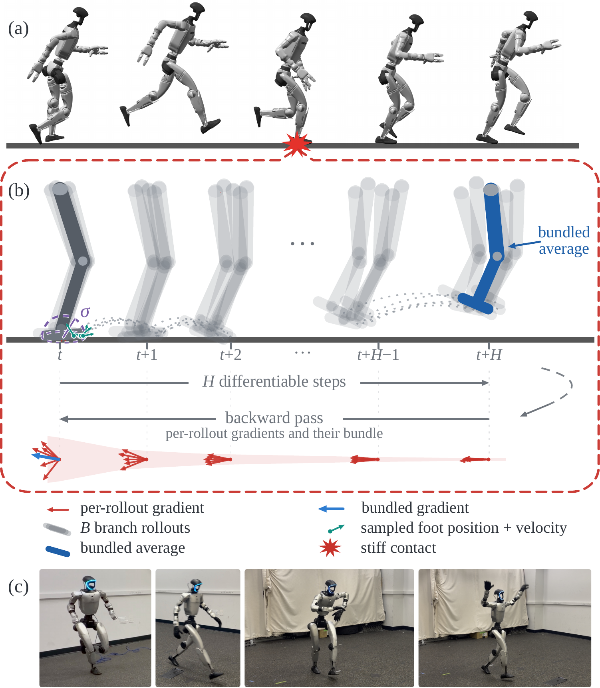
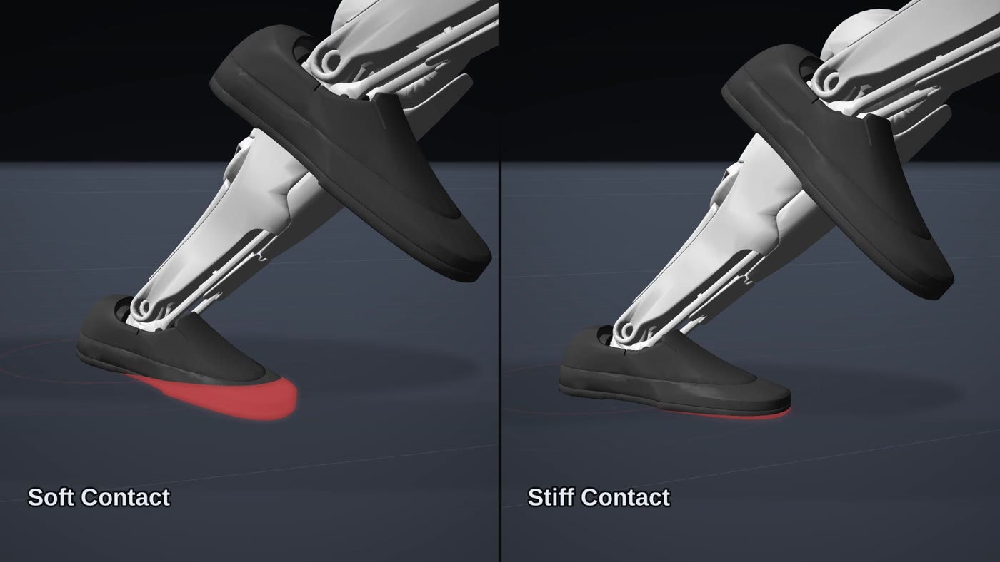
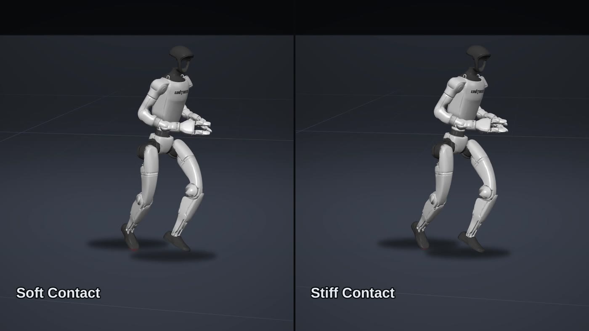

Differentiable simulators provide analytic gradients of the robot dynamics, which lets a policy be optimized with first-order methods instead of by sampling alone. In practice this is much more sample-efficient with faster wall-clock training time compared to reinforcement learning. However, to keep gradients smooth, differentiable simulators usually soften the contact model at the cost of physical fidelity, making it hard to deploy policies in the real world.
Increasing the contact model stiffness makes the simulation more physically accurate, but causes gradient variance to increase. Near a stiff contact event, small changes in the contact configuration produce large changes in the derivative, so rollouts that start close together disagree about which direction improves the return, and first-order learning stalls.
Bundled Contact Gradients (BCG) allows the stiffness of the contact model to be increased and reduces overall gradient variance from stiff contact events. When a contact impulse crosses a threshold, we simulate a small bundle of randomly perturbed copies of that contact state in parallel and average them before continuing the rollout. The forward dynamics stay stiff and deployable, while the backward pass sees an averaged sensitivity that depends much less on the exact contact configuration.
We use this to train motion-tracking policies for a Unitree G1 on four dynamic reference motions, and deploy them zero-shot on hardware.

(a) A rollout that passes through a stiff contact event. (b) At that contact, \(B\) perturbed branches are advanced for \(H\) differentiable steps and averaged. The backward pass, drawn below, collects the per-rollout gradients (red) and their bundled average (blue). (c) The learned policies on the real Unitree G1.
The simulator uses the analytically smoothed compliant contact model of Schwarke et al. (2025), in which contact impulses are scaled by penetration depth \(d\) through \(s_\kappa(d) = \bigl(1+\exp(-\kappa d)\bigr)^{-1}\). The stiffness \(\kappa\) sets how closely the model approaches hard contact.
The same tracking policy, rolled out under a soft and a stiff contact model. Under soft contact the foot sinks visibly into the ground — the red wedge below is the penetrating volume. Under stiff contact the foot stays on the surface. The policy trained with the soft contact model fails to transfer to MuJoCo.

Foot close-up. Red marks the volume below the ground plane.

The same instant, full body.
Soft (left) and stiff (right) contact throughout the motion. Measured against MuJoCo, mean foot penetration during training differs by 13.5 mm at \(\kappa=50\) and by 2.9 mm at \(\kappa=300\) on this motion.
One pass of the training loop, built up in the order the components come into play. The step below the figure is the one currently being added — click any step to jump to it.
Using the SHAC learning framework, a policy rolls out many environments in parallel over a short horizon, producing an action at each control step.
Whenever the contact force exceeds a threshold, we create a small bundle of perturbed copies of that contact state and simulate them in parallel.
We then average the resulting states and continue the rollout. This way, the forward dynamics stay stiff while the gradients have lower variance.
A learned value function bootstraps the short horizon,
and an adversarial differential discriminator compares simulated and reference motion features to give a differentiable imitation reward,
which is backpropagated through the bundled dynamics to update the policy.
To visualize how BCG affects the gradient, we measure how a small change in the G1's pelvis height influences its future vertical pelvis velocity during the Jump motion. We use this quantity because vertical motion during a jump is strongly coupled to foot-ground contact, making it an intuitive way to visualize contact-induced gradient sensitivity.
Each clip has two phases. First, during the forward rollout, the simulator advances the robot through the motion as its foot makes contact with the ground. Then, during the backward pass, automatic differentiation propagates sensitivities backward through the recorded simulation to compute how earlier states influenced the final motion.
This is why the gradient visualization moves from right to left. During the forward rollout, the simulator records the sequence of computations. The backward pass then follows this sequence in reverse, applying the chain rule from the final outcome back toward earlier states. The right-to-left motion therefore represents the direction of gradient propagation, not the direction of simulated time.
Soft contact. Nearby states produce similar, low-variance gradients — but the dynamics they describe are too compliant to transfer.
Stiff contact. Small perturbations of the same contact state produce large variations in the gradient. The learning signal becomes sensitive to exactly how the contact event resolves.
Stiff contact with BCG. The perturbed branches are simulated in parallel and their states averaged, so the backward sweep crosses an averaged contact response. The arrows stay consistent while the forward dynamics remain stiff.
Policies trained with SHAC + BCG under stiff contact (\(\kappa=300\)), on four dynamic reference motions from the LAFAN1 dataset: Run, Jump, Fight and Dance, each 15 s long, on the Unitree G1.
The same policies replayed in MuJoCo, zero-shot and without fine-tuning.
Run
Jump
Fight
Dance
The same policies again, deployed on the real Unitree G1 without any hardware fine-tuning.
Run — hardware
Jump — hardware
Fight — hardware
Dance — hardware
All policies are trained with SHAC+BCG at the indicated stiffness \(\kappa\) and evaluated over 5 runs after transfer to MuJoCo. Falls counts the runs in which root height drops below 0.3 m; Δd is the difference in mean foot penetration depth [mm] between the training simulator and MuJoCo, where positive values indicate deeper penetration during training. As stiffness rises, both go down: higher physical fidelity in the differentiable simulation transfers more reliably.
| \(\kappa\) | Run | Jump | Fight | Dance | ||||
|---|---|---|---|---|---|---|---|---|
| Falls ↓ | Δd [mm] ↓ | Falls ↓ | Δd [mm] ↓ | Falls ↓ | Δd [mm] ↓ | Falls ↓ | Δd [mm] ↓ | |
| 50 | 5/5 | 10.6 | 5/5 | 12.6 | 5/5 | 13.3 | 5/5 | 13.5 |
| 100 | 5/5 | 8.1 | 4/5 | 10.8 | 3/5 | 9.1 | 4/5 | 9.5 |
| 300 | 0/5 | 3.1 | 0/5 | 3.3 | 0/5 | 3.4 | 0/5 | 2.9 |
Global mean per-body position error \(E_{\text{track}}\) [cm] after transfer to MuJoCo, reported as mean ± std over 5 runs. SHAC+BCG achieves lower error on three of the four motions. PPO is slightly better on Jump, but its policy keeps both feet on the ground instead of reproducing the jumping motion.
| Motion | SHAC-Stiff + BCG (ours) [cm] | PPO [cm] |
|---|---|---|
| Run | 34.1 ± 0.4 | 42.8 ± 0.7 |
| Jump | 18.6 ± 0.4 | 18.0 ± 0.2 |
| Fight | 13.5 ± 0.3 | 34.3 ± 1.4 |
| Dance | 18.5 ± 0.8 | 19.0 ± 0.1 |
Both policies replayed side by side in MuJoCo. PPO is sometimes susceptible to getting stuck in local minima: on Jump, below, the foot that is supposed to be lifted, drags along the ground.
Jump — SHAC-Stiff + BCG (ours)
Jump — PPO
Run — SHAC-Stiff + BCG (ours)
Run — PPO
Fight — SHAC-Stiff + BCG (ours)
Fight — PPO
Dance — SHAC-Stiff + BCG (ours)
Dance — PPO
The contact model we use (Schwarke et al., 2025) is suited for differentiable simulation, but it solves an LCP over eight contact spheres, with four spheres on each foot. This makes each simulation step relatively expensive, so training remains slow in absolute wall-clock time despite the sample efficiency of first-order learning.
BCG introduces several parameters, including the perturbation scales \(\sigma_p\) and \(\sigma_v\), bundle size \(B\), and bundle horizon \(H\). These control the amount of smoothing and the computational cost, and currently require manual tuning. Automatically adapting them based on local contact sensitivity is an important direction for future work.
At stiff contacts, BCG simulates and differentiates through multiple perturbed branches, increasing both computation and memory requirements. In our experiments, we partly offset this cost by training with fewer parallel environments, but the additional overhead remains an important consideration for larger-scale tasks.
We evaluate BCG on humanoid motion-tracking tasks where the dominant contacts occur between the feet and the ground. It remains to be seen how the method behaves in more complex contact-rich settings, such as humanoid loco-manipulation or dexterous manipulation.
Full list of the settings used for the experiments in the paper. Unless noted otherwise, SHAC (with and without BCG) and the PPO baseline share the same environment, observations, imitation reward and domain randomization. SHAC + BCG was trained with 64 parallel environments and vanilla SHAC with 128.
| Parallel environments | 64 (SHAC + BCG) / 128 (vanilla SHAC) |
| Differentiable rollout horizon \(N\) | 32 control steps |
| Training iterations | 3000 |
| Discount factor \(\gamma\) | 0.99 |
| TD(\(\lambda\)) parameter \(\lambda\) | 0.95 |
| Actor learning rate | \(5\times10^{-3}\) |
| Critic learning rate | \(2\times10^{-3}\) |
| Learning-rate schedule | linear decay to \(10^{-5}\) |
| Optimizer | Adam, \(\beta = (0.7,\,0.95)\) |
| Critic ensemble size | 3 |
| Critic iterations / mini-batches | 16 / 4 |
| Max. gradient norm (actor / critic) | 1.0 / 10.0 |
| Initial action std \(\sigma_0\) | 1.0 (learned) |
| Observation / return normalization | running mean-std |
| Actor MLP | [512, 256, 128] |
| Critic MLP | [256, 256] |
| Activation | ELU (+ LayerNorm) |
| Parallel environments | 4096 |
| Rollout horizon | 24 control steps |
| Training iterations | 3000 |
| Discount factor \(\gamma\) | 0.99 |
| GAE parameter \(\lambda\) | 0.95 |
| Learning rate (actor / critic) | \(10^{-3}\) / \(10^{-3}\) |
| Learning-rate schedule | adaptive, \(\mathrm{KL}^{*} = 0.01\) |
| Learning epochs / mini-batches | 5 / 4 |
| Clip parameter \(\epsilon\) | 0.2 |
| Value loss coefficient | 1.0 (clipped) |
| Entropy coefficient | 0.0 |
| Max. gradient norm | 1.0 |
| Initial action std \(\sigma_0\) | 0.3 (learned) |
| Observation normalization | empirical |
| Actor MLP | [512, 256, 128] |
| Critic MLP | [256, 256] |
| Activation | ELU |
| Bundle size \(B\) | 10 |
| Bundle duration \(H\) | 2 control steps (8 simulation substeps) |
| Position perturbation scale \(\sigma_p\) | 1 cm |
| Velocity perturbation scale \(\sigma_v\) | 2 cm/s |
| Contact detection threshold \(\tau\) | 400 N |
| Aggregation \(\mathcal{A}\) | arithmetic mean |
| Jacobian pseudoinverse damping \(\lambda_J\) | \(10^{-4}\) |
| Simulator | NVIDIA Warp |
| Contact model | analytically smoothed compliant (Schwarke et al., 2025) |
| Contact stiffness \(\kappa\) | 300 |
| Contact solver iterations | 10 |
| Contact spheres per foot | 4 |
| Control step \(\Delta t\) | 0.02 s (50 Hz) |
| Physics substeps per control step \(S\) | 4 |
| Physics step \(\Delta t / S\) | 0.005 s (200 Hz) |
Actor and critic receive the same observation \(\mathbf{o}_t \in \mathbb{R}^{849}\); the critic sees it without noise. It consists of the robot state and the reference motion at the next three control steps \(t{+}1, t{+}2, t{+}3\). Rotations use the 6D tangent-normal encoding, and key-body positions are expressed relative to the root. The five key bodies are both ankles, the head and both wrists. Noise is sampled uniformly from \(\mathcal{U}(-n, n)\). The policy outputs joint position targets \(\mathbf{a}_t \in \mathbb{R}^{29}\).
| Observation | Dimension | Noise \(n\) |
|---|---|---|
| Root height \(h\) | \(\mathbb{R}^{1}\) | – |
| Root orientation \(\mathbf{R}\) | \(\mathbb{R}^{6}\) | 0.05 rad |
| Root linear velocity \(\mathbf{v}\) | \(\mathbb{R}^{3}\) | 0.5 m/s |
| Root angular velocity \(\boldsymbol{\omega}\) | \(\mathbb{R}^{3}\) | 0.2 rad/s |
| Joint rotations \(\mathbf{q}\) (30 bodies × 6D) | \(\mathbb{R}^{180}\) | 0.01 rad |
| Joint velocities \(\dot{\mathbf{q}}\) | \(\mathbb{R}^{29}\) | 0.5 rad/s |
| Key-body positions \(\mathbf{p}_{\text{key}}\) | \(\mathbb{R}^{15}\) | 0.01 m |
| Reference root position \(\hat{\mathbf{p}}_{\text{root}}\) (relative to robot) | \(\mathbb{R}^{3\times3}\) | 0.25 m |
| Reference root orientation \(\hat{\mathbf{R}}\) | \(\mathbb{R}^{3\times6}\) | – |
| Reference joint rotations \(\hat{\mathbf{q}}\) | \(\mathbb{R}^{3\times180}\) | – |
| Reference key-body positions \(\hat{\mathbf{p}}_{\text{key}}\) | \(\mathbb{R}^{3\times15}\) | – |
| Total | \(\mathbb{R}^{849}\) |
| Ground friction \(\mu\) | \(\mathcal{U}(0.3,\,1.2)\) |
| Base mass offset | \(\mathcal{U}(-3,\,3)\) kg |
| Link mass scale | \(\mathcal{U}(0.8,\,1.2)\) |
| Link CoM offset (per axis) | \(\mathcal{U}(-3,\,3)\) cm |
| PD gain scale \(k_p, k_d\) | \(\mathcal{U}(0.8,\,1.2)\) |
| Joint armature scale | \(\mathcal{U}(0.75,\,1.25)\) |
| Joint friction scale | \(\mathcal{U}(0.5,\,1.5)\) |
| Default joint position offset | \(\mathcal{U}(-0.01,\,0.01)\) rad |
| Action latency | \(\{0, 1\}\) control steps |
| Push interval | \(\mathcal{U}(1,\,3)\) s |
| Push linear velocity \(v_{xy}\,/\,v_z\) | \(\pm0.5\) / \(\pm0.2\) m/s |
| Push angular velocity roll, pitch / yaw | \(\pm0.52\) / \(\pm0.78\) rad/s |
| Reset root pose \(x, y\,/\,z\) | \(\pm0.05\) / \(\pm0.01\) m |
| Reset root orientation roll, pitch / yaw | \(\pm0.1\) / \(\pm0.2\) rad |
| Reset joint positions | \(\pm0.1\) rad |
| Robot | Unitree G1 humanoid (29 DoF) |
| Reference motions | LAFAN1: Run, Jump, Fight, Dance |
| Imitation reward | ADD |
| Discriminator learning rate | \(2.5\times10^{-4}\) |
| Action-rate penalty weight | \(-0.8\) |
| Reference state initialization | random motion phase |
| Fall threshold (root height) | 0.3 m |
| Training GPU | NVIDIA RTX 2080 Ti |
| Evaluation runs per setting | 5 |
@misc{anonymous2026bcg,
title = {Bundled Contact Gradients: Stabilizing Differentiable Simulation
for Deployable Dynamic Tasks},
author = {Anonymous},
year = {2026},
}